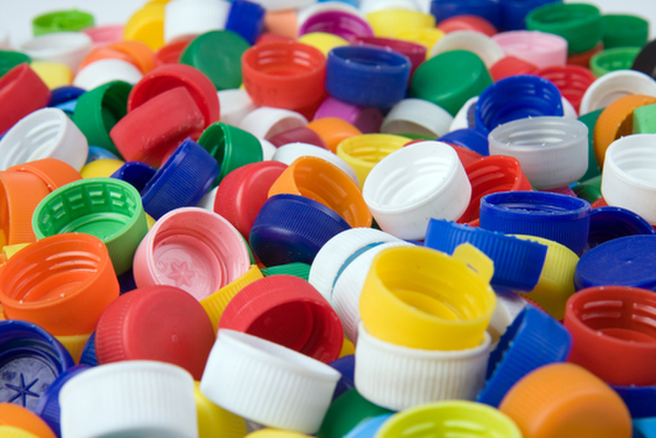

-Tblog-
高輪生のほのぼのブログ
〇#3 キャップ投げを覚える

最近私は、ペットボトルのキャップを使って飛ばして遊ぶという「キャップ投げ」にハマっています。
まあ野球の簡易版みたいな感じです。
面白いところは、変化球があるところです。紹介していきます。
・ストレート（親指と中指で挟んではじくように投げます。とくにひねりがあるわけではないです。）
・スライダー（30°ほど手を体側に傾けて投げます。力を入れると投げやすい。）
・カーブ（個人的に好きな球種です。表面を裏にして、手を体側に30°ほど傾けて投げます。緩急がつけやすい。）
・フォーク（球が落ちます。裏にして若干上に傾けて、あとはストレートと同じように投げます。）
・シュート（キャップは表で、右側を下に傾け、弾く感じで投げます。）
・カットボール（野球と同じようにタイミングをずらす軌道。中指を親指より上に、親指はちょっと下にすることで投げます。）
長々と書きましたが、見るより実際に遊んでみた方が100倍面白いですよ！
虹もかいてもう少しで完成ですね☻
※後日談ですが、壁紙は無事完成しました。
高学祭に乞うご期待
作った人:木下 晃